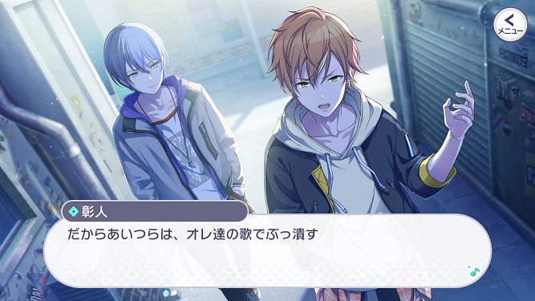

小豆沢 こはね (あずさわ こはね)
とても内気で、自分に自信が無い少女。
ある日、偶然通りがかったライブカフェ＆バーで杏とミュージシャンがセッションしているのを目撃。
学校の音楽では聴いたことも見たこともない、ラップや激しいテンポの音楽に衝撃を受け、虜になってしまう。
Vivid BAD SQUAD
ストリートのセカイ
Vivid BAD SQUAD(略称: ビビバス)は、「伝説の夜」を超えるために結成された男女混合ストリートユニットです。
白石 杏 (しらいし あん)
サバサバとした勝気な性格。
父は元ミュージシャンで、この地域のストリートではかなり有名。
そんな父がかつておこなったライブイベント『RAD WEEKEND』をこえる、最高のイベントを自分の手でつくることを夢見ている。
サバサバとした勝気な性格。
父は元ミュージシャンで、この地域のストリートではかなり有名。
そんな父がかつておこなったライブイベント『RAD WEEKEND』をこえる、最高のイベントを自分の手でつくることを夢見ている。
東雲 彰人 (しののめ あきと)
杏の父にあこがれて、中学時代から音楽活動をしている。
相棒の冬弥とは『BAD DOGS』という名前でイベントハウスなどで歌っている。
一見、人当たりがよさそうに見えるのだが…
杏の父にあこがれて、中学時代から音楽活動をしている。
相棒の冬弥とは『BAD DOGS』という名前でイベントハウスなどで歌っている。
一見、人当たりがよさそうに見えるのだが…
青柳 冬弥 (あおやぎ とうや)
クールで無口。
クラシック音楽に携わる厳格な父がおり、幼少期から英才教育を受けてきたため、音楽センスは抜群。
だが、父に嫌気がさし路上での音楽活動を始めた。
クールで無口。
クラシック音楽に携わる厳格な父がおり、幼少期から英才教育を受けてきたため、音楽センスは抜群。
だが、父に嫌気がさし路上での音楽活動を始めた。
バーチャル・シンガー
初音ミク、MEIKO、鏡音レン
ストリート沿いのカフェでマスターをしているMEIKOと、そこのお手伝いのミクとDJレンが、 こはね達が本当の想いと向き合えるよう、相談相手になってくれる。
ストリート沿いのカフェでマスターをしているMEIKOと、そこのお手伝いのミクとDJレンが、 こはね達が本当の想いと向き合えるよう、相談相手になってくれる。
メインストーリーのあらすじは公式動画があるのでそちらを確認してみてください。
なお、この動画のBGMは Ready Steady です。
(公式の紹介文)
内気で何をするにもびくびくしてしまう小豆沢こはね。
ある日、裏通りから聞こえてきた歌と音楽に衝撃を受ける。
そして、それを歌っていた白石杏に導かれるように、ストリートの音楽へと足を踏み入れていく。
なお、この動画のBGMは Ready Steady です。
(公式の紹介文)
内気で何をするにもびくびくしてしまう小豆沢こはね。
ある日、裏通りから聞こえてきた歌と音楽に衝撃を受ける。
そして、それを歌っていた白石杏に導かれるように、ストリートの音楽へと足を踏み入れていく。
①こはねと杏の出会い
こはねはこれまでストリートの音楽に触れたことすらありませんでした。
そんな彼女が、「伝説」を超えようと日々奮闘している杏と相棒として組むことになります。
こはねは杏の、杏はこはねのどのようなところに惹かれたのでしょうか？
そして2人がどのような挑戦をし、どのように成長していくのかにも注目です。
ところで、こはねの印象がずいぶんと違うことに気づいたでしょうか？
他のページと見比べてみるとかなり異なっていますね。
彼女にどのような変化があったのかもポイントです。
そんな彼女が、「伝説」を超えようと日々奮闘している杏と相棒として組むことになります。
こはねは杏の、杏はこはねのどのようなところに惹かれたのでしょうか？
そして2人がどのような挑戦をし、どのように成長していくのかにも注目です。
ところで、こはねの印象がずいぶんと違うことに気づいたでしょうか？
他のページと見比べてみるとかなり異なっていますね。
彼女にどのような変化があったのかもポイントです。
②彰人と冬弥の想い

彰人は本気で「伝説の夜」を超えることを目指しており、だからこそ同じ夢を追っていたはずの杏が素人のこはねと組んだことには怒り混じりの疑問を抱きます。
2人に覚悟を問う彰人自身の覚悟、そして2人の歌を実際に見た後の変化に注目です。
一方で冬弥は、確かに彰人と同じ方向に進もうとしているものの、ストリートで歌い始めたきっかけは彰人と異なり、2人の本気度には大きな違いがありました。
抱えている想いに明らかな違いがあるように思える2人は、今後もうまくやっていけるのでしょうか。
2人に覚悟を問う彰人自身の覚悟、そして2人の歌を実際に見た後の変化に注目です。
一方で冬弥は、確かに彰人と同じ方向に進もうとしているものの、ストリートで歌い始めたきっかけは彰人と異なり、2人の本気度には大きな違いがありました。
抱えている想いに明らかな違いがあるように思える2人は、今後もうまくやっていけるのでしょうか。
③ミクたちと4人を繋ぐセカイ
こはねと杏の2人組、そして彰人と冬弥の2人組は、4人で一緒に活動しているわけではありませんでした。
しかしストリートのセカイは4人の想いによってできた、とバーチャル・シンガーたちは言います。
最初は半ば敵対関係にあった2人同士は、どのような経緯で巡り合い、「Vivid BAD SQUAD」になっていくのでしょうか。
また、このセカイのミクがただただカッコいいこともプレイヤーから人気を集めているポイントの1つです。
しかしストリートのセカイは4人の想いによってできた、とバーチャル・シンガーたちは言います。
最初は半ば敵対関係にあった2人同士は、どのような経緯で巡り合い、「Vivid BAD SQUAD」になっていくのでしょうか。
また、このセカイのミクがただただカッコいいこともプレイヤーから人気を集めているポイントの1つです。
メインストーリー後の展開
クリックして開く(※ネタバレ含む)
④「相棒」とは何か
とある日のイベントでこはねがミスをしたとき、杏は「自分がこはねを守れなかった」と反省します。
しかし、その考えに対して彰人は「相棒なら守ろうなんて思わない」「守るという言葉は下に見ている相手に使うものだ」と批判し、 杏がこはねを未だ相棒として見れていないのではと指摘します。 一方で、こはねは自分が頼りない存在だから杏たちに迷惑をかけている、不甲斐ないのは自分の方だと考えています。
杏とこはねは本当の意味での相棒として進みだすことができるのでしょうか。
しかし、その考えに対して彰人は「相棒なら守ろうなんて思わない」「守るという言葉は下に見ている相手に使うものだ」と批判し、 杏がこはねを未だ相棒として見れていないのではと指摘します。 一方で、こはねは自分が頼りない存在だから杏たちに迷惑をかけている、不甲斐ないのは自分の方だと考えています。
杏とこはねは本当の意味での相棒として進みだすことができるのでしょうか。
⑤クラシック一家の葛藤
ある日、冬弥は「君の音楽はどこか型にハマっているようだ」と言われてしまいます。
クラシックのプロである父から逃げて彰人と歌い始めた冬弥でしたが、自分はクラシックに未だ囚われ続けていると自覚します。
その理由は父にストリートの音楽を認められていないことにありそうです。
冬弥が本当は何をしたいのか、そして父との対立にビビバスとしてどう決着を付けに行くのかがカギとなってきます。
クラシックのプロである父から逃げて彰人と歌い始めた冬弥でしたが、自分はクラシックに未だ囚われ続けていると自覚します。
その理由は父にストリートの音楽を認められていないことにありそうです。
冬弥が本当は何をしたいのか、そして父との対立にビビバスとしてどう決着を付けに行くのかがカギとなってきます。
カバー楽曲
ビビバスのカバーする楽曲にはストリートらしいカッコよさや力強さを感じられるものが多いです。
また、どちらかというと4人で歌うよりも女子2人、男子2人で歌う曲が多いイメージもあります。
「男子だけ/女子だけ/男女混合で」歌った方がより印象深くなる曲が色々とある中、そのすべてに対応できるのはビビバスの強みの1つです。
リリース初期から実装されているカバー曲「劣等上等」は、もともとリンとレンの10周年記念に作られた曲です。
そこにこはねと杏の透き通った歌声とパワフルな歌声が合わさることで、2組の相棒がカッコよさを高め合っています。
また、ストリートユニットらしい踊りやMV内の演出にも注目です。
また、どちらかというと4人で歌うよりも女子2人、男子2人で歌う曲が多いイメージもあります。
「男子だけ/女子だけ/男女混合で」歌った方がより印象深くなる曲が色々とある中、そのすべてに対応できるのはビビバスの強みの1つです。
リリース初期から実装されているカバー曲「劣等上等」は、もともとリンとレンの10周年記念に作られた曲です。
そこにこはねと杏の透き通った歌声とパワフルな歌声が合わさることで、2組の相棒がカッコよさを高め合っています。
また、ストリートユニットらしい踊りやMV内の演出にも注目です。
男子がカバーする曲も力強くカッコいい印象を受けますが、男子ならではの妖艶さも彼らの魅力の1つです。
カバー楽曲「威風堂々」は、その特徴がいかんなく発揮されている例の1つです。
彰人の高音と冬弥の低音の調和にもとてもゾクゾクします。
ここではKAITOも歌っていますが、ストリートのセカイに今のところKAITOは出てきていません。
今後のストーリーで登場するということだろう、と多くのプレイヤーが期待しているところです。
カバー楽曲「威風堂々」は、その特徴がいかんなく発揮されている例の1つです。
彰人の高音と冬弥の低音の調和にもとてもゾクゾクします。
ここではKAITOも歌っていますが、ストリートのセカイに今のところKAITOは出てきていません。
今後のストーリーで登場するということだろう、と多くのプレイヤーが期待しているところです。
書き下ろし楽曲
いわゆる「ビビバスらしさ」を前面に打ち出している書き下ろし楽曲の1つは「RAD DOGS」です。
男子2人がメインとなっており、ラップパートをはじめとしたあらゆる箇所でカッコよさを打ち出しています。
加えてこの曲は2DMVの完成度が特に高く、公式YouTubeチャンネルでの再生数がトップクラスです。
なお、ゲーム内ではアナザーボーカルとして女子2人バージョンを聞くこともできます。
男子2人がメインとなっており、ラップパートをはじめとしたあらゆる箇所でカッコよさを打ち出しています。
加えてこの曲は2DMVの完成度が特に高く、公式YouTubeチャンネルでの再生数がトップクラスです。
なお、ゲーム内ではアナザーボーカルとして女子2人バージョンを聞くこともできます。
書き下ろし楽曲「Forward」は、ここまでに紹介した曲と少し雰囲気が変わります。
どこか近未来的な、爽やかな楽曲ではありますが、ストリートミュージックとしての良さもしっかりと残っています。
また、こはねと杏の「相棒」感、彰人と冬弥の「相棒」感、そして4人を見守るミクの立場が3DMVからも良く伝わってきます。
どこか近未来的な、爽やかな楽曲ではありますが、ストリートミュージックとしての良さもしっかりと残っています。
また、こはねと杏の「相棒」感、彰人と冬弥の「相棒」感、そして4人を見守るミクの立場が3DMVからも良く伝わってきます。